측량및지형공간정보기사 (2018-03-04 기출문제)
1과목: 측지학 및 위성측위시스템
1. 구면삼각형에 대한 내용으로 옳지 않은 것은? (단, 지구반지름은 6370㎞로 가정한다.)
- 구과량은 구면삼각형과 평면삼각형의 차로 삼각형의 내각의 합이 180°를 넘는 양이다.
- 구과량의 크기는 반지름의 제곱에 반비례하고 면적에 비례한다.
- 한 변이 30㎞ 정도인 정삼각형에서 구과량은 약 20″정도 발생한다.
- 평면측량에서는 구과량을 무시할 수 있다.
(정답률: 69%)

2. GNSS에서 위성과 수신기 사이의 의사거리를 구하기 위하여 관측하는 것은?
- 신호의 전달시간
- 신호의 형태
- 신호의 세기
- 신호의 잡음비
(정답률: 81%)
3. GNSS의 계통적 오차 중에서 위성에 의하여 발생하는 오차는?
- 다중경로 오차
- 궤도 오차
- 전리층 굴절 오차
- 안테나 편심 오차
(정답률: 70%)
4. P코드의 특성에 대한 설명으로 옳지 않은 것은?
- L1신호에만 실려서 들어온다.
- P코드는 비트율이 높아 의사거리의 정확도가 높다.
- P코드는 10.23Mbps의 비트율을 가지며, C/A코드는 1.023Mbps의 비트율을 가진다.
- P코드는 주기의 길이 때문에 P코드 전체를 이용한 측위는 불가능하다.
(정답률: 71%)
5. GPS 위성에 대한 설명으로 틀린 것은?
- 위성이 지구를 한 바퀴 공전할 때 지구는 반 바퀴 자전한다.
- 위성의 고도는 정지궤도위성의 고도보다 낮다.
- 하나의 궤도면에 6개의 위성이 등간격을 이루도록 설계되어 있다.
- 북금점 혹은 남극점에서도 가시위성(visible satellite)이 존재한다.
(정답률: 53%)
6. 연직선 편차에 대한 설명으로 옳은 것은?
- 타원체의 법선과 지오이드의 법선이 이루는 차이
- 연직선과 지오이드면이 이루는 차이
- 천문위도와 천문경도가 이루는 차이
- 연직선과 중력이상이 이루는 차이
(정답률: 61%)
7. 중력측정 단위 중 1gal에 해당되는 것은?
- 1m/s2
- 1cm/s2
- 1kg/s2
- 1g/s2
(정답률: 75%)
8. 탄성파 측정에 대한 설명 중 틀린 것은?
- 굴절법은 지표면으로부터 낮은 곳을 대상으로 한다.
- 반사법은 지표면으로부터 깊은 곳을 대상으로 한다.
- 외핵과 내핵의 경계를 알아내기 위하여 반사법을 이용한다.
- 단층과 같은 지질 구조는 탄성파 측량에 의해 알아낼 수 있다.
(정답률: 73%)
9. 자오선과 항상 일정한 각도를 유지하는 지표의 선으로 선상의 각 점에서 방위각이 일정한 곡선은?
- 묘유선
- 등위도선
- 항정선
- 측지선
(정답률: 73%)
10. GNSS 측위 및 항법에서 실시간적으로 추정되는 것과 거리가 먼 것은?
- 방위각
- 시간
- 중력
- 속도
(정답률: 73%)
11. 물리측지에 대한 설명으로 옳지 않은 것은?
- 중력은 만유인력에 의한 지구의 인력과 지구 자체에 의한 원심력 벡터의 합력이며 방향은 연직방향이다.
- 지구의 형상은 중력과 밀접한 관계가 있으며 적도에 가까울수록 중력은 증가한다.
- 지하에 밀도가 큰 물질이 있는 경우에 중력이상이 정(+)으로 나타난다.
- 중력측량이란 지구상 특정 지점의 중력값을 측정하고 중력이상을 구하는 작업을 말한다.
(정답률: 74%)
12. 통합기준점 GNSS 관측에 대한 설명으로 옳은 것은?
- 연속관측시간의 표준은 12시간으로 한다.
- GNSS위성은 고도각 10° 이상을 사용한다.
- 데이터 취득간격은 60초를 표준으로 한다.
- GNSS관측은 정적간섭측위방식으로 설치한다.
(정답률: 56%)
13. GNSS의 방송궤도력에서 제공하는 정보로 옳은 것은?
- 위성과 수신기 사이의 거리
- 위성의 위치정보
- 대기 중 습도정보
- 수신기의 시계오차
(정답률: 56%)
14. 지자기의 3요소에 해당되지 않는 것은?
- 편각
- 수직각
- 복각
- 수평분력
(정답률: 83%)
15. 지구가 장반경 6377.397㎞, 단반경 6356.079㎞인 타원체라고 하면 지구의 편평률은?
- 약 1/300
- 약 1/250
- 약 1/200
- 약 1/150
(정답률: 74%)
16. 지구상의 어느 한 점에서 지오이드에 대한 연직선이 천구의 적도면과 이루는 각으로 정의되는 위도는?
- 측지위도
- 지심위도
- 화성위도
- 천문위도
(정답률: 64%)
17. UTM좌표계에 대한 설명으로 옳지 않은 것은?
- 세계를 하나의 통일된 좌표로 표시하기 위한 목적으로 고안되었다.
- 좌표지역대의 분할을 위해 위도는 8°, 경도는 6°간격으로 분할하였다.
- 중아자오선에서 축척계수는 0.9996이다.
- 우리나라의 UTM좌표는 경도 127°와 극지방을 좌표계의 원점으로 하는 55S와 56S지역 대에 속한다.
(정답률: 71%)
18. 대류층 지연 보정 모델과 관련이 없는 것은?
- Niell 모델
- Hopefield 모델
- Saastamoinen 모델
- Stokes 모델
(정답률: 61%)
19. 천문 좌표계에 해당하지 않는 것은?
- 지평 좌표
- 적도 좌표
- 황도 좌표
- 극 좌표
(정답률: 54%)
20. DGPS 측위에 대한 설명 중 틀린 것은?
- 위치를 알고 있는 기지점과 위치를 모르는 미지점에서 동시에 관측한다.
- 동시에 수신 가능한 위성이 최소한 4개 필요하다.
- 기지점과 미지점의 거리가 길수록 측위정확도가 높다.
- 기지점과 미지점에서의 오차가 유사할 것이라는 가정을 이용한다.
(정답률: 81%)
2과목: 응용측량
21. 수로측량 원도 작성 시 다음 도식이 의미하는 것은?
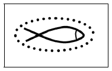
- 인공어초
- 등부표
- 바다에 침몰한 선박
- 등대
(정답률: 74%)
22. 노선 측량의 단곡선 설치에서 곡선의 반지름 R=600m, 교각 I=32°15′일 때 곡선시점부터 곡선종점까지 곡선상에 설치해야 할 20m간격의 말뚝 수는? (단, 시단현의 길이는 15m이다.)(오류 신고가 접수된 문제입니다. 반드시 정답과 해설을 확인하시기 바랍니다.)
- 17개
- 18개
- 19개
- 20개
(정답률: 38%)
23. 하천의 수위를 관측하기 위한 관측지점 선정 조건으로 옳지 않은 것은?
- 하저의 변화가 적은 지점
- 하상변화가 작고 상·하류가 약 100~200m정도가 직선인 지점
- 평시나 홍수 시에도 관측이 편리한 지점
- 지천에 의한 특별한 수위 변화가 뚜렷한 지점
(정답률: 70%)
24. 단곡선을 설치하기 위하여 교각 I=80°, 외할 E=10m로 하려고 할 때 접선길이는?
- 22.9m
- 27.5m
- 35.3m
- 45.7m
(정답률: 57%)
25. 그림과 같이 삼각형으로 나누어서 측량을 실시하였다. 시공 계획고를 50m로 할 때 남는 토량은?
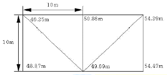
- 70.28m3
- 74.37m3
- 81.67m3
- 92.45m3
(정답률: 48%)
26. 단곡선 설치 시 그림과 같이 교각(I) 관측이 어려워 ∠AA'B', ∠BB'A'을 측정한 값이 141°40′과 98°20′이었다면 교각(I)는?
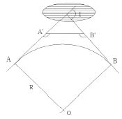
- 60°
- 90°
- 120°
- 150°
(정답률: 65%)
27. 터널측량의 특성에 대한 설명으로 틀린 것은?
- 조명이 필요하다.
- 기계설치가 어렵다.
- 주요측점은 천장에 설치한다.
- 대기가 안정되어 삼각측량의 정확도가 향상된다.
(정답률: 69%)
28. 그림과 같은 유토곡선에 대한 설명으로 옳은 것은?
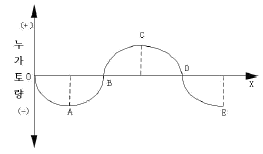
- 상향부분 A~C 구간은 성토구간을 나타낸다.
- 기선 OX상의 B, D에서는 절토와 성토가 규형을 이룬다.
- C점은 성토에서 절토로 변하는 것이다.
- 이 곡선은 결과적으로 토량이 남는다는 것을 의미한다.
(정답률: 60%)
29. 어느 토지의 3변의 길이가 40.54m, 68.75m, 92.43m인 삼각형 토지의 면적은?
- 1783.3m2
- 1583.3m2
- 1383.3m2
- 1283.3m2
(정답률: 50%)
30. 터널측량에서 측점의 위치가 표와 같을 경우 터널 내 곡선의 교각은?
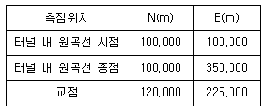
- 18°10′50″
- 28°15′45″
- 48°10′50″
- 71°50′10″
(정답률: 42%)
31. 수애선(水涯線) 및 수애선 측량에 관한 설명으로 옳지 않은 것은?
- 수면과 하안과의 경계선을 수애선이라 한다.
- 수애선 측량에는 심천측량에 의한 방법과 동시관측에 의한 방법이 있다.
- 수애선은 하천 수위에 따라 변동하는 것으로 최저수위에 의하여 정해진다.
- 심천측량에 의한 방법을 이용할 때에는 수위의 변화가 적은 시기에 심천측량을 행하여 하천의 횡·단면도를 먼저 만든다.
(정답률: 63%)
32. 삼각점을 이용하여 터널 입구 A와 B의 좌표값에 대한 결과가 표와 같다. 측선 AB의 거리와 방위각은?
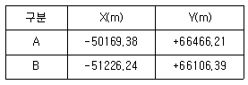
- 거리 : 1116.43m, 방위각 : 18°48′06″
- 거리 : 1116.43m, 방위각 : 198°48′06″
- 거리 : 380.55m, 방위각 : 18°48′06″
- 거리 : 380.55m, 방위각 : 198°48′06″
(정답률: 53%)
33. 그림은 도로의 횡단면도를 나타낸것이다. 이 횡단면의 면적은? (단, 단위는 m이다.)
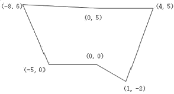
- 103.0m2
- 51.5m2
- 43.5m2
- 26.5m2
(정답률: 45%)
34. 하천측량에서 유속을 측정하는 방법 중 3점법의 관측 지점으로 옳은 것은?
- 수면에서 수심의 0.1, 0.4, 0.8이 되는 3지점
- 수면에서 수심의 0.1, 0.5, 0.9이 되는 3지점
- 수면에서 수심의 0.2, 0.6, 0.8이 되는 3지점
- 수면에서 수심의 0.2, 0.7, 0.9이 되는 3지점
(정답률: 72%)
35. 지하시설물측량의 일반적인 절차로 옳은 것은?
- 작업계획 및 준비 → 시설물의 위치측량 → 조사 → 탐사 → 지하시설물 원도 작성
- 작업계획 및 준비 → 조사 → 탐사 → 시설물의 위치측량 → 지하시설물 원도 작성
- 조사 → 작업계획 및 준비 → 탐사 → 시설물의 위치측량 → 지하시설물 원도 작성
- 조사 → 탐사 → 작업계획 및 준비 → 시설물의 위치측량 → 지하시설물 원도 작성
(정답률: 65%)
36. 다음 중 노선공사를 위한 계획조사측량작업에 가장 적합한 것은?
- 평판측량
- 시거측량
- 골조측량
- 사진측량
(정답률: 45%)
37. 클로소이드 곡선에 대한 설명으로 틀린 것은?
- 일반철도와 같은 궤도구간에 주로 적용되는 완화곡선의 일종이다.
- 매개변수(A)의 크기는 클로소이드의 확대율을 의마한다.
- 클로소이드의 특성점이란 곡선반지름, 곡선장, 매개변수의 크기가 같은 지점을 의미한다.
- 곡률이 곡선의 길이에 비례한다.
(정답률: 47%)
38. A=130m의 클로소이드 곡선에서 곡선길이(L)가 60m일 때, 곡선반지름(R)은?
- 187.1m
- 281.7m
- 321.7m
- 485.1m
(정답률: 56%)
39. 댐의 장기적 안정성을 조사하기 위한 변위측량에 대한 설명으로 틀린 것은?
- 삼각측량에 의하여 댐의 수평방향의 절대변위를 관측할 수 있다.
- 댐 표면과 부근의 고정점을 이용하여 반복관측한다.
- 지형 및 정확도면에서 3개 이상의 고정점을 이용한다.
- 변위측량의 절대 위치결정에 대한 정확도는 5.0~10.0cm 정도이다.
(정답률: 56%)
40. 하천의 종단측량을 위한 높이 관측에 일반적으로 사용되는 측량 방법은?
- 직접 수준 측량
- 교호 수준 측량
- 항공 사진 측량
- 삼각 수준 측량
(정답률: 43%)
3과목: 사진측량 및 원격탐사
41. GNSS/INS를 이용한 항공사진측량의 장점으로 옳은 것은?
- 해석적 내부표정을 쉽게 할 수 있다.
- 해석적 상호표정을 쉽게 할 수 있다.
- 지상기준점측량의 작업량을 줄 일 수 있다.
- 수치사진측량 기술을 적용할 수 있다.
(정답률: 61%)
42. 평균표고 120m인 지형을 초점거리 120mm인 사진기로 촬영고도 3300m에서 촬영한 항공사진 1장이 포함하는 면적은? (단, 사진크기는 23cm X 23cm이다.)
- 32.42km2
- 37.15km2
- 40.01km2
- 52.35km2
(정답률: 52%)
43. 항공사진 또는 위성영상을 지상기준점(GCP)을 이용해 왜곡된 영상의 좌표와 실제 지표 좌표를 연계하여 영상의 좌표를 지도 좌표계와 일치시키는 과정을 무엇이라 하는가?
- 대기보정(Atmospheric Correction)
- 방사량보정(Radiometric Correction)
- 시스템보정(System Correction)
- 기하보정(Geometric Correction)
(정답률: 67%)
44. 대공표지에 관한 설명으로 옳은 것은?
- 지면보다 주로 낮게 설치한다.
- 대공표지로 사용되는 재료는 콘크리트로 규정되어 있다.
- 상공은 30°정도의 각도로 열어 두어야 한다.
- 사진 상에서 확인 가능한 자연점이 있는 경우에는 생략할 수 있다.
(정답률: 49%)
45. 촬영고도 2000m에서 촬영한 사진Ⅰ의 주점기선길이는 59mm, 사진Ⅱ의 주점기선길이는 61mm일 때 시차차 3.0mm인 건물의 높이는?
- 95m
- 85m
- 100m
- 65m
(정답률: 57%)
46. 원격탐사(Remote sensing)에 관한 설명으로 옳지 않은 것은?
- 원격탐사는 다중 파장대에 의지한 지구표면의 정보획득이 용이하며 측정자료가 수치로 기록되어 판독이 자동적이고 정량화가 가능하다.
- 원격탐사 자료는 물체의 반사 또는 방사스펙트럼 특성 및 광원의 특성 등에 의해 영향을 받는다.
- 원격탐사의 자료는 대단히 양이 많으며 불필요한 자료가 포함되어 있어 보정이 필요하다.
- 원격센서를 능동적 센서와 수동적 센서로 구분할 때 대상물에서 방사되는 전자기파를 수집하는 방식을 능동적 센서라 한다.
(정답률: 57%)
47. 항공사진 사진크기 a×a, 초점거리 f, 촬영고도 H, 사진축척 1 : M, 주점기선장 b, 촬영기 선장 B, 종죽복도 p, 횡중복도 q일 때 주점기선장의 계산식으로 옳은 것은?
- b=a×(1-p/100)
- b=a/2
- b=a×(1-q)
- b=B/H
(정답률: 62%)
48. 시차에 대한 설명으로 옳지 않은 것은?
- 입체모델에서 표고가 높은 곳이 낮은 곳보다 시차가 더 크다.
- 시차는 촬영기선을 기준으로 비행방향 성분을 횡시차, 비행방향에 직각인 성분을 종시차라 한다.
- 종시차가 존재하는 대상물은 입체시가 되지 않는다.
- 횡시차는 대상물 간 수평위치 차이를 반영한다.
(정답률: 32%)
49. 녹색식생의 상대적 분포량과 활동성을 나타내는 방사측정값인 식생지수(vegetation index)의 특징이 아닌 것은?
- 식생지수는 유효성 및 품질관리를 위하여 구체적인 생물학적 변수와 연관되어야 한다.
- 식생지수는 지형효과 및 토양변이 등에 의해 영향을 줄 수 있는 내부효과를 정규화하여야 한다.
- 식생지수의 일관된 비교를 위하여 태양각, 촬영각, 대기상태와 같은 외부효과를 정규화 하거나 모델링할 수 있어야 한다.
- 식생지수는 식물의 생물리적 변수에 대한 민감도를 최소화할 수 있어야 하며 소규모지역의 식생상태와 비선형적으로 비례하여야 한다.
(정답률: 57%)
50. 촬영고도가 5000m이고 카메라의 초점거리가 15cm인 연직사진 상의 비고 500m인 야산을 광각카메라를 이용하여 촬영하였을 때 사진축척은?
- 1 : 20000
- 1 : 30000
- 1 : 36600
- 1 : 50000
(정답률: 57%)
51. 횡정합점에 대한 설명으로 옳은 것은?
- 인접 스트립을 연결하기 위한 점이다.
- 지상측량을 실시하여 좌표를 구한다.
- 대공표지를 설치하여야 한다.
- 상호표정에 사용한다.
(정답률: 64%)
52. 다음 중 시간과 기상조건의 영향을 가장 적게 받는 영상취득 방법은?
- 고해상도 광학 위성영상
- 초미세분광영상(hyperspectral image)
- 레이더 영상
- 항공영상
(정답률: 52%)
53. 수치지도 제작에 있어서 도화된 데이터를 표준분류체계에 따라 구분하여 지형지물의 공간정보와 속성정보를 연계시키는 작업을 무엇이라 하는가?
- 구조화편집
- 정위치편집
- 세선화편집
- 일반화편집
(정답률: 56%)
54. 원격탐사센서가 각 전자기복사에너지 파장을 선택적으로 관측할 수 있는 이유로 적합한 것은?
- 대기의 전자기파 에너지 흡수 작용
- 대기의 전자기파 에너지 산란 작용
- 지표의 전자기파 에너지 반사 작용
- 지표의 전자기파 에너지 전도 작용
(정답률: 41%)
55. TIN(Triangular Irregular Network)에 대한 설명으로 옳지 않은 것은?
- 어떠한 연속필드에도 적용할 수 있다.
- 측정한 점의 값은 보존되지 않는다.
- 델로니 삼각망(Delaunay triangulation)으로 분할한다.
- 수치표고모델(DTM : Digital Terrian Model)을 구성하는 방법 중 하나이다.
(정답률: 53%)
56. 완벽한 수직사진에 있는 한 점의 사진좌표를 (x, y, z)이라고 하고, z축을 기준으로 κ만큼 회전할 때 얻어진 사진좌표를 (xk, yk, zk)라고 할 때, 사진좌표의 관계로 옳은 것은?
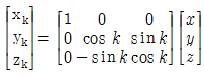
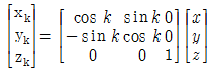
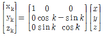
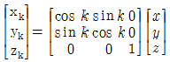
(정답률: 51%)
57. 상호표정에 대한 설명으로 옳지 않은 것은?
- 절대표정과는 독립적인 표정으로 상호 영향이 없다.
- 일반적으로 내부표정 후에 작업이 이루어진다.
- 5개의 표정인자로 표정점이 5점 있으면 가능하지만 일반적으로 대칭으로 6점을 취한다.
- 종시차를 소거시키는 작업이다.
(정답률: 46%)
58. x 방향 경사도를 알아내기 위한 필터는? (단, 필터의 가로방향(→)을 x축, 세로방향(↑)을 y축으로 한다.)
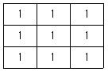
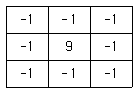
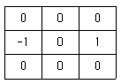
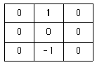
(정답률: 60%)
59. 초점거리 153mm인 카메라로 촬영된 축적 1:6000의 연직항공사진에서 상단이 연직점으로부터 51.0mm 떨어져 있는 철탑이 사진 상에 1.0mm 크기로 나타나 있다면 철탑의 실제 높이는?
- 16m
- 17m
- 18m
- 19m
(정답률: 55%)
60. 피사각이 90°로 일반도화 및 판독용으로 주로 활용되는 사진기는?
- 광각사진기
- 보통각사진기
- 초광각사진기
- 협각사진기
(정답률: 30%)
4과목: 지리정보시스템
61. 메타데이터(Metadata)에 대한 설명으로 거리가 먼 것은?
- 일련의 자료에 대한 정보로서 자료를 사용하는데 필요하다.
- 자료를 생산, 유지, 관리하는데 필요한 정보를 담고 있다.
- 자료에 대한 내용, 품질, 사용조건 등을 기술한다.
- 정확한 정보를 유지하기 위해 수정 및 갱신이 불가능하다.
(정답률: 70%)
62. 지리정보시스템(GIS)를 이용한 공간분석에서 공간 분포 패턴을 파악하고자 입력 데이터셋의 특정 필드값에 따라 그룹을 나누고 새로운 속성값을 입력하는 방법으로써 토지 이용도, 토지피복도 등을 제작하는데 많이 이용되는 방법은?
- 삽입(Insert)
- 병합(Merge)
- 분류(Classification)
- 중첩(Overlay)
(정답률: 64%)
63. 공간데이터의 위상모델(Topology)을 이용한 공간분석이 아닌 것은?
- 경사분석(slope analysis)
- 중첩분석(overlay analysis)
- 인접성분석(contiguity analysis)
- 연결성분석(connectivity analysis)
(정답률: 60%)
64. 지리정보시스템(GIS) 국제표준화 기구 중 상호 이질적인 분산 플랫폼 환경에 공히 적응할 수 있도록 개방향 GIS 표준 인터페이스를 개발하는 국제표준화 기구는?
- ISO(Internatioanl Standard Organization)
- OGC(Open GIS Consortium)
- ISO/TC211
- CEN/TC287
(정답률: 48%)
65. 지리정보시스템(GIS) 자료의 입력에 적용하는 수동 디지타이징방법에 대한 설명으로 옳은 것은?
- 다수의 도면 입력 시 스캐닝방법과 비교하여 작업속도가 빠르다.
- 스캐닝방법과 비교하여 작업이 자동화되어 있다.
- 입력할 양이 적은 지도에 적합하며 손상된 도면도 입력할 수 있다.
- 복잡하고 다양한 폴리곤이 많은 지도에서는 사용할 수 없다.
(정답률: 54%)
66. 파일헤더의 위치참조 정보를 가지도 있으며 지리정보시스템(GIS) 데이터로 주로 사용하는 래스터파일 형식은?
- BMP
- GeoTiff
- GIF
- JPG
(정답률: 67%)
67. 공간데이터의 요소 중 면에 대한 설명으로 틀린 것은?
- 호수, 삼림, 건문 등은 대표적인 면사상이다.
- 지표상 면형 실체는 축척에 상관없이 면사상으로만 표현가능하다.
- 최소 3개 이상의 선으로 폐합되는 2차원 객체이다.
- 지리정보시스템(GIS)에서 대부분의 주제도는 면사상이다.
(정답률: 52%)
68. 아래 [보기]가 설명하고 있는 것은?
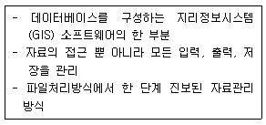
- 공간자료처리언어(SDML)
- 공간자료교환표준(SDTS)
- 의사결정 지원치계
- 데이터베이스 관리체계(DBMS)
(정답률: 73%)
69. 지리정보시스템(GIS) 소프트웨어의 기본 기능 구성과 거리가 먼 것은?
- 자료의 입력 및 검색
- 자료의 변환 및 출력
- 자료의 암호화 및 표준화
- 자료의 저장 및 데이터베이스 관리
(정답률: 59%)
70. 지리정보시스템(GIS)의 필요성 및 효과에대한 설명으로 거리가 먼 것은?
- 자료중복조사 방지 및 분산거리
- 행정환경 변화에 따른 보안강화와 주체별 자료의 독립적 구축
- 통계담당 부서와 각 전문부서 간 업무의 유기적 관계 구축
- 시간적, 공간적 자료의 부족, 개념 및 기준의 불일치로 인한 신뢰도 저하 해소
(정답률: 52%)
71. [보기]와 같은 작업을 수행할 때 공통적으로 활용되는 지리정보시스템(GIS) 자료는?
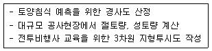
- 토지피복분류도
- 네트워크도
- 시계열 위성영상
- 수치지형모형
(정답률: 56%)
72. 다음의 두 테이블을 intersect한 결과로 옳은 것은?
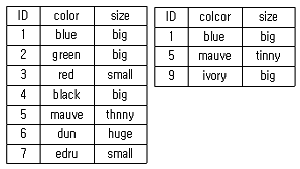
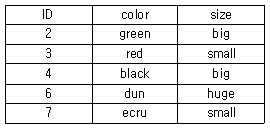
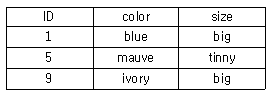
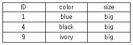
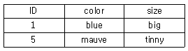
(정답률: 56%)
73. 관계형 DBMS와 비교할 때, 객체지향형 DBMS의 장점으로 옳지 않은 것은?
- 자료의 갱신이 용이
- 자료처리 속도의 현저한 향상
- 동질성을 가지고 구성된 실세계의 객체들을 비교적 정확히 묘사
- 강력한 자료 모델링 기능 부여
(정답률: 43%)
74. 조직 내 많은 부서가 공동으로 필요로 하는 다양한 지리정보를 손쉽게 취급할 수 있도록 클라이언트 서버기술을 바탕으로 시스템을 통합시키는 GIS기술은?
- Progessional GIS
- Component GIS
- Enterprise GIS
- Internet GIS
(정답률: 62%)
75. 관측대상 객체의 좌측과 우측에 어떤 객체가 있는지를 정의하고 특정 객체가 다른 객체의 내부에 포함되는가 혹은 다른 객체를 포함하는가를 정의하는 것은 GIS 벡터 데이터의 어떠한 특징에 대한 설명인가?
- 스파게티 데이터
- 래스터 데이터
- 3D 데이터
- 위상관계
(정답률: 59%)
76. 복합조건문(composite selection)으로 공간자료를 선택하고자 할 때, 다음 중 어떠한 경우에도 가장 많은 결과가 선택되는 것은? (단, 각 항목은 0이 아님)
- (Area<40000 OR (LandUse=8 OR AdminCode=12))
- (Area<40000 OR (LandUse=8 AND AdminCode=12))
- (Area<40000 AND (LandUse=8 OR AdminCode=12))
- (Area<40000 AND (LandUse=8 AND AdminCode=12))
(정답률: 53%)
77. 벡터 자료와 비교할 때 래스터 자료에 대한 설명으로 틀린 것은?
- 자료 구조가 단순하다.
- 위상구조로 표현하기 힘들다.
- 스캐닝한 자료는 래스터 구조이다.
- 객체를 점, 선, 면의 형태로 구분하기 쉽다.
(정답률: 51%)
78. 행정구역도와 버스 노선도를 합성하여 행정구역을 통과하는 버스 노선을 관리하고자 할때, 가장 적합한 분석 방법은?
- 표면분석
- 중첩분석
- 경계분석
- 근린분석
(정답률: 55%)
79. 지리좌표를 지리정보시스템에서 사용가능하도록 디지털 형태로 만드는 과정은?
- Geocoding
- GeoVisualization
- Address Matching
- Dynamic Segmentation
(정답률: 65%)
80. 지리정보시스템(GIS)의 시공간 자료 모델 중 같은 주제의 여러 레이어에 대한 시간을 기록하는 방식으로써 주로 동일 지역에 대한 다양한 시기의 위성을 이용하여 변화탐지에 사용되는 모델은?
- 스냅샷(snapshot) 모델
- 시공간 입방체(space-time cube) 모델
- 시공간 복합(space-time composite) 모델
- 사건기반(event-based) 모델
(정답률: 50%)
5과목: 측량학
81. 기지점 A~B간 트래버스측량을 실시하였다. 그 결과 X좌표의 폐합차=-0.15m, Y좌표의 폐합차=+0.20m, 폐합비가 1/11000라면 측선길이의 합은?
- 5500m
- 2750m
- 1375m
- 688m
(정답률: 40%)
82. 폐합트래버스를 측량한 후 계산하여 표와 같은 결과를 얻었다. 측선 BE의 방위각은?
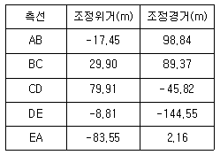
- 0°00′25″
- 45°00′00″
- 290°28′47″
- 315°00′00″
(정답률: 33%)
83. 정밀도를 표현하는 방법에 대한 설명으로 옳지 않은 것은? (단, n : 관측 횟수)
- 편차의 제곱의 합에 대한 평균을 표준편차라 한다.
- 확률오차는 확률곡선에서 곡선 아래의 면적을 1/2로 하는 오차이다.
- 동일한 경중률인 경우 표준오차는 1회 관측에 대한 표준편차를 으로 나눈 값과 같다.
- 평균오차는 각각의 관측값과 평균값의 차의 절대값에 대한 산술평균값으로 구한다.
(정답률: 31%)
84. 1:25000 지형도상에서 표고가 480m, 210m인 2점 사이에 케이블카를 설치하고자 한다. 도상의 2점 간 거리가 4cm이었다. 처짐을 고려하지 않는다면 케이블의 길이는?
- 0.963㎞
- 1.036㎞
- 1.723㎞
- 2.026㎞
(정답률: 46%)
85. 그림과 같은 삼각점의 선점도에서 신점(구점)을 ○, 기지점을 ◎라 하면, 신점의 위치는 3~4개의 기지점에서 평균계산(조정)을 행한다. 평균계산의 방향이 화살표와 같을 때 가장 마지막으로 계산(조정)되는 점은?
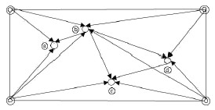
- ⓐ
- ⓑ
- ⓒ
- ⓓ
(정답률: 55%)
86. 수평각 관측법 중, 가장정확한 조합각관측법으로 측량하려고 한다. 한 점에서 관측할 방향의 수가 5라면 총 관측각 수와 조건식 수는?
- 총 관측각 수 : 6, 조건식 수 : 4
- 총 관측각 수 : 6, 조건식 수 : 6
- 총 관측각 수 : 10, 조건식 수 : 4
- 총 관측각 수 : 10, 조건식 수 : 6
(정답률: 42%)
87. 오차론에 의해 처리되며 확률변수에 대한 수치적 값을 의미하는 오차는?
- 정오차
- 착오
- 우연오차
- 누차
(정답률: 50%)
88. 지형의 표시법에 대한 설명으로 옳은 것은?
- 우모선법 - 짧고 거의 평행한 선을 이용하여 선의 간격, 굵기, 길이, 방향 등에 의하여 지형의 기복을 표시하는 방법
- 채색법 - 특정한 곳에서 일정한 방향으로 평행광선을 비칠 때 생기는 그림자를 바로 위에서 본 상태로 기복의 모양을 표시하는 방법
- 음영법 - 등고선의 사이를 같은 색으로 칠하여 색으로 표고를 구분하는 방법
- 등고선법 - 측점에 숫자를 기입하여 지형의 높낮이를 표시하는 방법
(정답률: 52%)
89. 교호수준측량의 실시 결과 a1=2.657m, a2=0.472m, b1=3.895m, b2=2.106m를 얻었다. A점의 표고가 100m일 때 B점의 표고는?
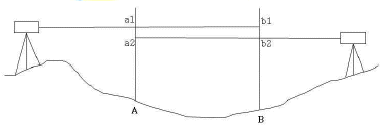
- 97.128m
- 98.564m
- 101.436m
- 102.935m
(정답률: 50%)
90. 각관측 장비의 기계오차를 없앨 수 있는 방법에 대한 설명으로 옳지 않은 것은?
- 시준축 오차는 망원경을 정·반으로 관측하여 평균한다.
- 연직축 오차는 망원경을 정·반으로 관측하여 평균한다.
- 수평축 오차는 망원경을 정·반으로 관측하여 평균한다.
- 편심오차는 망원경을 정·반으로 관측하여 평균한다.
(정답률: 44%)
91. 삼각측량의 단열 삼각망의 용도로 가장 적합한 것은?
- 노선, 하천조사 측량을 위한 골조측량
- 복잡한 지형측량을 하기 위한 골조측량
- 시가지와 같은 정밀을 요하는 골조측량
- 광대한 지역의 지형도를 작성하기 위한 골조측량
(정답률: 50%)
92. 2점간의 거리를 측정한 결과가 다음과 같을 때 표준오차는?
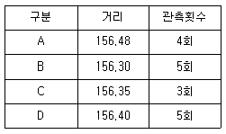
- ±1.66cm
- ±2.43cm
- ±3.25cm
- ±3.88cm
(정답률: 28%)
93. 등고선의 성질에 대한 설명으로 옳지 않은 것은?
- 등고선 중 조곡선은 가는 점선으로 표시한다.
- 일반적으로 등고선 간격의 기준이 되는 곡선은 계곡선이다.
- 주곡선 간격은 축척 1:50000 지형도의 경우 20m이다.
- 등고선은 분수선과 직각으로 만난다.
(정답률: 49%)
94. 수준측량을 한 결과로부터 아래와 같은 값을 얻었다. 각 측점의 계산된 표고 중 틀린것은? (단,
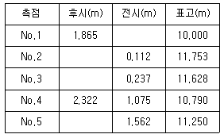
- No.2
- No.3
- No.4
- No.5
(정답률: 43%)
95. 공공측량의 정의에 의해 아래와 같이 「대통령령으로 정하는 측량」을 지정할 때, 각호의 측량에 해당되지 않는 것은?
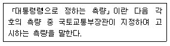
- 측량실시지역의 면적이 10제곱킬로미터인 지형측량
- 측량노선의 길이가 5킬로미터인 기준점측량
- 촬영지역의 면적이 5제곱킬로미터인 측량용 사진의 촬영
- 공공의 이해에 특히 관계가 있다고 인정되는 사설철도의 부설, 간척 및 매립사업 등에 수반되는 측량
(정답률: 36%)
96. 공고측량시행자는 작업을 시행하기 며칠전까지 공공측량 작업계획서를 제출하여야 하는 가?
- 3일
- 7일
- 15일
- 30일
(정답률: 59%)
97. 기본측량성과의 국외 반출 금지의 예외 조항으로 “외국 정부와 기본측량성과를 서로 교환하는 등 대통령령으로 정하는 경우”에 해당되지 않는 것은?
- 정부를 대표하여 외국 정부와 교섭하거나 국제회의 또는 국제기구에 참석하는 자가 자료로 사용하기 위하여 지도나 그 밖에 필요한 간행물 또는 측량용 사진을 반출하는 경우
- 관광객 유치와 관광시설 홍보를 목적으로 지도나 그 밖에 필요한 간행물 또는 측량용 사진을 제작하여 반출하는 경우
- 축척 1/50000 미만인 소축척의 수치지형도를 국외로 반출하는 경우
- 축척 1/25000 지도로서 국가정보원장의 지원을 받아 보안성 검토를 거친 경우(등고선, 발전소, 가스관 등 국토교통부장관이 정하여 고시하는 시설 등이 표시되지 아니한 경우로 한정한다.)
(정답률: 58%)
98. 측량업자로서 속임수, 위력(威力), 그 밖의 방법으로 측량업과 관련된 입찰의 공정성을 해친 자에 대한 벌칙 기준은?
- 300만원 이상의 과태료에 처한다.
- 1년 이하의 징역 또는 1000만원 이하의 벌금에 처한다.
- 2년 이하의 징역 또는 2000만원 이하의 벌금에 처한다.
- 3년 이하의 징역 또는 3000만원 이하의 벌금에 처한다.
(정답률: 57%)
99. 측량기준점의 국가기준점에 대한 설명으로 옳은 것은?
- 수준점 : 수로조사 시 해양에서의 수평위치와 높이, 수심 측정 및 해안선 결정 기준으로 사용하기 위한 기준점
- 중력점 : 지구자기 측정의 기준으로 사용하기 위하여 정한 기준점
- 통합기준점 : 지리학적 경위도, 직각좌표 및 지구중심 직교좌표의 측정 기준으로 사용하기 위하여 대한민국 경위도원점을 기초로 정한 기준점
- 삼각점 : 지리학적 경위도, 직각좌표 및 지구중심 직교좌표 측정의 기준으로 사용하기 위하여 위성기준점 및 통합기준점을 기초로 정한 기준점
(정답률: 38%)
100. 국가공간정보 기본법에서 다음과 같이 정의되는 것은?
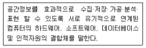
- 공간정보데이터베이스
- 국가공간정보통합체계
- 공간정보체계
- 공간객체
(정답률: 39%)
한 변이 30㎞ 정도인 정삼각형에서 구과량이 약 20″정도 발생하는 이유는 구과량이 반지름의 제곱에 반비례하기 때문이다. 지구반지름이 6370㎞이므로, 한 변이 30㎞인 정삼각형의 내각은 약 60°이다. 따라서 구면삼각형의 면적은 지구의 표면적의 약 0.0001%에 해당하며, 이에 따라 구과량도 매우 작은 값이 된다.